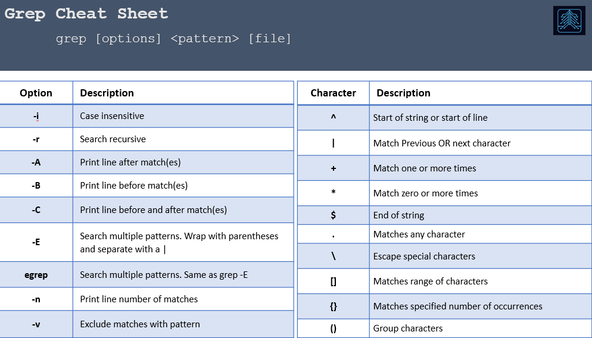

Bash: How to Grep Good
Date: May 17, 2022
Summary:
Grep is the command I used the most when I managed Linux Servers. It was crucial when troubleshooting errors/failures in applications. For Pentesting it’s great for finding information in a target’s environment. Knowing how to grep is a must, but I see people not using it to its fullest potential. This article will get you up to speed on what you need to know from basic to advance, and empress all your co-workers. Click below to go to a certain section:
Go To:
Lines before/after match (-A -B -C)Recursive, case insensitive (-r, -i)
Multiple patterns and line number (-E, egrep, -n)
Remove pattern matches and pipe to grep (-v, | )
Regex with Grep
Final Thoughts

Details:
grep is essentially used to search for patterns. One command can search recursively through directories, search multiple files, print lines before/after matches, search more than one pattern at once, and more. To get the full listing of options type ‘man grep’ into a Linux terminal. Below is the syntax for grep:
grep [options] pattern [File]
To cover the basics, we’ll do a simple grep command without any options and build from there. I made a long text file with random useless words that I'll be using for the examples. Then I edited the file and included words/patterns to use for these exercises. In the next few examples, we’ll look for creds in the file. I'll start with a search for the pattern ‘user’ in this ‘example.txt’ file.
grep user example.txt
Lines before/after match (-A -B -C):
We can see that there is a match for 'user' so grep prints the whole line that has the pattern 'user' (if there was not a match there would be no output). Now that we found a match, there might be some creds in this file which are usually in lines before or after the username. Grep has an option to print ‘x’ number of lines before (-B), after (-A), or both (-C).
-B NUM
Print NUM lines before matching lines.
-A NUM
Print NUM lines after matching lines.
-C NUM
Print NUM lines before and after matching lines.
Let’s try this out, first we will print one line after the match (-A1), then print one line before (-B1), and finally print one line both before an after (-C1).
grep -A1 user example.txt
grep -B1 user example.txt
grep -C1 user example.txt
This helps us to get more information related to the pattern we are trying to match.
In this case we see the password on the next line, and the location to enter these
credentials on the previous line. This isn’t to say that the password and log on location will always be
in the next line, but will give you an idea of use cases for these options.
I used these options a ton when I was troubleshooting issues with applications.
I would search for the pattern ‘exception’ which will show up in logs when an
application fails. Then I’d start grepping the lines after and before to get an
idea of what is causing that ‘exception’.
Recursive, case insensitive (-r, -i):
By default, grep is case sensitive meaning it will search a pattern exactly how you enter it. So ‘User’ will return a different result than searching ‘user’ because the ‘U’ is uppercased. The way to get around this is to perform a search as case insensitive (-i):
grep -i pattern [file]
-i perform case insensitive search on pattern
Searching again for 'user' except this time as case insensitive we get an additional match because there is a match with an upper case ‘U’:
So far, we’ve been searching in just one file, but it’s not always the case that you know the file name containing the information you are looking for. To search all the files in the current directory you can replace the [file] with an asterisk *. You can also mess around with the asterisk to search in files only containing certain text in the file name. Such as only files with a ‘log’ extension (*.log), ‘txt’ extension (*.txt, and so on. Not just by the end of the name, but beginning and middle. Below are some examples:
grep [options] pattern *
search all files in the current directory for pattern
grep [options] pattern *.log
search pattern in all files in the current directory that end in .log
grep [options] pattern May*
search pattern in all files in the current directory that start with May
grep [options] pattern *wordpress*
search pattern in all files in the current directory that have 'wordpress' in the file name
It will output the file that the match was found in (shown below). When I perform searches like this, I like to add the option of case insensitive (-i). I didn’t use it in these examples to simplify what the asterisks do.
Now that we know how to search in multiple files, let’s talk about searching through directories inside directories. At the moment we’ve only discussed searching files inside the current directory, but it would be a hassle to change to every directory, perform a search, change into another directory, perform another search, and so on. This is basically what ‘recursive search’ does. For grep, the option to perform a recursive search is ‘-r’.
grep -r pattern [file]
-r search recursively through directories
I will change directories one level up, and perform a recursive search. I recommend adding the case insensitive option. I'll perform one without ‘-i’ to show only the recursive option and the following search with ‘-i’ so you get use to using ‘-i’.
I listed the directory I was in to show the folders it will search through. ‘grep -r password *’ recursively searched through all folders. Any matches will also show the path to get to the file which (highlighted in purple text). The last command is with ‘-i’, which in this case finds an additional match with ‘Password’.
Multiple patterns and line number (-E, egrep, -n):
Now is a good time to show how to search more than one pattern at a time. Up until now, if you want to search for ‘user’ and ‘password’ you would have to perform two separate searches. Well grep has an option to perform multiple searches at once. This is with the option ‘-E’, you might have heard of ‘egrep’ which is the same thing as ‘grep -E’. It saves a keystroke using ‘egrep’, but it’s personal preference if you want to use ‘egrep’ or ‘grep -E’. egrep uses the same options as grep, so you can tack on ‘-i’, ‘-r’ or any other option you would normally use with grep.
grep -E 'pattern1|pattern2|pattern3' [file]
-E search more than one pattern. Include a pipe | between each pattern and wrap inside quotes
egrep 'pattern1|pattern2|pattern3' [file]
egrep is the same as 'grep -E' and uses same options as grep
Another option that comes in handy is listing the line number that the match is in. This is helpful when dealing with programming files. Say you are looking for a certain variable in a file that you are about to edit and want to see all the matches and their line number. Or maybe you want to show objective evidence for a certain line causing issues. You can also start messing with other options when performing this, such as displaying lines before or after(-A,-B,-C), or searching recursively (-r). A basic search is as follows:
grep -n pattern [file]
-n display the line number of each match
The following example is where I’m trying to look for a variable in a php reverse shell script. You don’t need to know what that script does, just know I’m trying to find the variable called ‘$ip’ along with its line number. It will show every match and I’ll get an idea of what that variable is used for. In php variables have a $ in front of the name (like many other languages) but if you grep just with the $ it will think you are using a bash command as bash also uses $ for variables. We will have to use a backslash ‘\’ in front of the $ in order to tell the command to escape the special character.
Now I can go into that file and know each time the variable $ip is mentioned and its line number. Making it easier when I read through the file as I’ll know where they are all at. Reminder the backslash is only to escape the special character of $.
Remove pattern matches and pipe to grep (-v, | ):
A common way you will see grep is through pipes. Where output is piped and redirected into grep. Doing this is crucial in mastering grep - any bash command actually. Just think of it as performing a grep on the output of the command before the pipe. Common syntax examples would look as follows:
[command] | grep [option] pattern
[command] | [command] | grep [option] pattern
[command] | grep [option] pattern | [command]
For this example, we’ll grep for processes that are running on a machine. The command that will be used to list the processes will be ‘ps -eaf’ (eventually I’ll make a post of using ps). If you run ‘ps -eaf’ it will show all the process. In this case we only want matches with ‘apache’ in it. It will get the output of ‘ps -eaf’ then pass or ‘pipe’ it into grep. Where grep will perform a pattern match and output any matches.
When I’m working with processes and piping to grep, I like to remove the
result of my grep search from the output. As you can see in above screenshot, the bottom
line shows a process of ‘grep’ which is the grep search itself. Removing it
comes in handy later when I want it to pipe it to other commands such as awk where
I’ll grab a certain column of the output.
Using ‘-v’ will remove a pattern from the output. In this case I want to remove
the pattern of ‘grep’ from the output. To be clear, I’m not performing a grep command after
the -v option. That is the actual text I want to use as my pattern.
grep -v pattern [file]
-v select non-matching
[command] | grep -v pattern
get output of the command and grep to return results not matching pattern
In the screenshot above there are two commands. The first showing output
being piped to ‘grep -v grep’ which removes any matches with ‘grep’ in the output.
Now we have an acurate list of only apache processes. The second example is
something I’d do to utilize this new output, which is to get the PIDs (the second column) using
‘awk’. Don’t need to know everything about awk.
Just know it can grab columns of text.
Regex with Grep:
Time to get into the fun stuff, performing grep searches with regex patterns. Regex is a whole complicated topic on its own. I won’t go too in depth into regex, but just know it’s a really fancy (and useful) way to perform pattern matching. Other languages use it as well, such as python and powershell. We have already used some regex when we used the option ‘-E’, the pipe | is an OR where it searched pattern1 OR pattern2. Along with the asterisk which matches zero or more. Below is a small Regex cheat sheet covering the commands we will go through.To grep a pattern that is the start of a line we’ll use ^ and in this case we are going to look for a process that is started by the root user. The command ps has the first column being the user that is running the process. To find matches that start with the pattern I will use the following syntax:
grep ^pattern [file]
^ matches lines starting with the pattern
[command] | grep ^pattern
get output of the command and return matches that start with the pattern

In the first screen shot above I searched for processes that are being ran by
root by searching for lines that start with root. To take it a step further,
in the second screenshot I want to see python scripts, so I take the output
from before and grep it again to search for the pattern ‘py’ which is the
extension for python scripts. Here I can see root is running a script
called ‘exploitable-script.py’. This will help me in investigating scripts
ran by root, where I'll check if it’s a script I can exploit.
We can use regex to look for files that have write permissions set to any
user. Which is a good way of getting privilege escalation. The command to see
permissions of a files is ls -l. it is broken down into three sections where
the third section is the permissions for any user. Below is a list of files
with their permissions in the first column. The only file that is writeable by
anyone is ‘test.py’, underlined in yellow is ‘w’ in the third section - showing writable by any user.
In order to grep this, we will need to use regex. The permissions are in the first column so we can use ^ in our command. There’s a total of 10 characters in the permissions column, and we need the 9th character to be a ‘w’. We don’t care what the first 8 characters are, or the character after. This leads us to a the following grep command:
grep '^[-,a-z]\{8\}w'
^ match pattern at the start of the line
[-,a-z] grab any character that is either a dash or lowercase in the range a-z
\{8\} match pattern of [-,a-z] 8 times. we need to escape the brackets with \
w match the character 'w'
Finally, we’ll search for phone numbers. This can be tricky because phone numbers can be formatted in different ways such as (xxx)xxx-xxxx or xxx-xxx-xxxx or xxx xxx xxxx so we’ll have to take each into account. To do this use the following command:
grep '\(\(([0-9]\{3\})\|[0-9]\{3\}\)[ -]\?\)\{2\}[0-9]\{4\}' file
([0-9]\{3\}) get three numbers inside the parenthesis
|[0-9]\{3\} or just get three numbers
[ -]\?\ match a hyphen, space, or any character
\{2\} match two occurance of the previous, the two sets of 3 digits
[0-9]\{4\} match a set of 4 digits
Final Thoughts:
Thanks for the read, quite long of a post but it was needed. There was a lot to cover with grep, and hopefully there was something new you weren't aware of. Grep is very handy, and if you don’t remember everything check out the man page and you can grep out what you are looking for. For example, don’t remember the recursive option just run ‘man grep |grep recursive’ and you won't have to go through the whole man page.